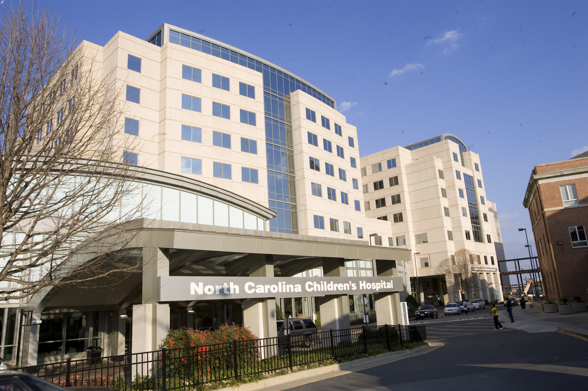

What They Do:
UNC Children's is the only state-supported pediatric facility in North Carolina. No patient is refused care, but funding from the state covers only 10 percent of the hospital's costs, thereby necessitating outside financial support. Carolina For The Kids has become a fundamental part of this network, raising more than $3.3 million in 14 years and increasing volunteer presence in the hospital in each of these years. Please explore our site to learn more about the unique ways you can help Carolina For The Kids make a difference for the patients, families and staff at UNC's Children's. More interesting facts about UNC Children's can be found at:
UNC Children's
What We Do:
In the hospital, Carolina For The Kids...
Organizes events that create opportunities for interaction between students and the children, including monthly socials and time in the pediatric playroom.
Provides committee volunteers for different events in the hospital
Plans out-of-hospital socials
Volunteer in the Pediatric Playroom
Coordinates the kid co-captain program